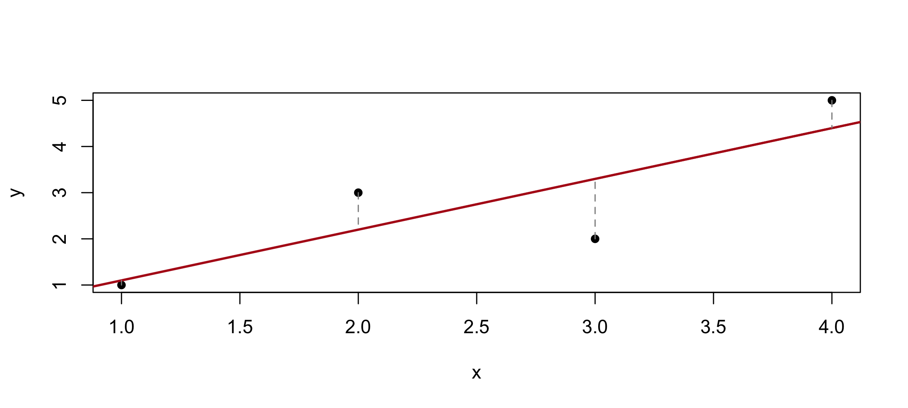

AEM 6850
Empirical Methods for Applied Economists
Prof. Ariel Ortiz-Bobea
3 · R essentials II
Tuesday, September 1, 2026
Objectives
By the end of this session you can:
Build, index and combine matrices.
Build and index lists, and tell [ from [[.
Run one function over every row, column, group or file.
Read a real CSV, fix its types, and write results back out.
Join two tables, and check the row count before and after.
Matrices
A matrix is one vector with dimensions.
<- matrix (1 : 6 , nrow = 2 )
#> [,1] [,2] [,3]
#> [1,] 1 3 5
#> [2,] 2 4 6
c (dim (m), nrow (m), ncol (m))matrix (1 : 6 , nrow = 2 , byrow = TRUE ) # filled across, not down
#> [,1] [,2] [,3]
#> [1,] 1 2 3
#> [2,] 4 5 6
matrix (1 : 2 , nrow = 2 , ncol = 3 ) # too few values: R recycles them
#> [,1] [,2] [,3]
#> [1,] 1 1 1
#> [2,] 2 2 2
Indexing a matrix
2 , 3 ] # row 2, column 3 class (m[, 3 ]) # a plain vector: the dimension was dropped class (m[, 3 , drop = FALSE ]) # still a matrix head (m, 1 ) # first rows; tail() for the last
#> [,1] [,2] [,3]
#> [1,] 1 3 5
Subsetting by position, name, and logical
<- matrix (c (12 , 15 , 19 ,14 , 17 , 22 ), nrow = 2 , byrow = TRUE )rownames (temps) <- c ("Compton" , "Reseda" )colnames (temps) <- c ("Jan" , "Feb" , "Mar" )
#> Jan Feb Mar
#> Compton 12 15 19
#> Reseda 14 17 22
"Reseda" , "Feb" ] # by name, not position c ("Jan" , "Feb" )] # several at once
#> Jan Feb
#> Compton 12 15
#> Reseda 14 17
> 15 ] # by logical: returns a vector
The diagonal
<- matrix (1 : 9 , nrow = 3 )
#> [,1] [,2] [,3]
#> [1,] 1 4 7
#> [2,] 2 5 8
#> [3,] 3 6 9
diag (sq) # pull the diagonal out diag (3 ) # build a 3 x 3 identity matrix
#> [,1] [,2] [,3]
#> [1,] 1 0 0
#> [2,] 0 1 0
#> [3,] 0 0 1
diag (c (4 , 5 , 6 )) # build a diagonal matrix from a vector
#> [,1] [,2] [,3]
#> [1,] 4 0 0
#> [2,] 0 5 0
#> [3,] 0 0 6
Matrix arithmetic
* 9 / 5 + 32 # every cell at once, Celsius to Fahrenheit
#> Jan Feb Mar
#> Compton 53.6 59.0 66.2
#> Reseda 57.2 62.6 71.6
t (temps) # flip rows and columns
#> Compton Reseda
#> Jan 12 14
#> Feb 15 17
#> Mar 19 22
Combining matrices
<- matrix (c (9 , 11 , 16 ), nrow = 1 ,dimnames = list ("Pasadena" , c ("Jan" , "Feb" , "Mar" )))rbind (temps, more) # a new row: same columns
#> Jan Feb Mar
#> Compton 12 15 19
#> Reseda 14 17 22
#> Pasadena 9 11 16
cbind (temps, Apr = c (21 , 24 )) # a new column: same rows
#> Jan Feb Mar Apr
#> Compton 12 15 19 21
#> Reseda 14 17 22 24
:: bdiag (diag (2 ), matrix (1 , 2 , 2 )) # blocks down the diagonal
#> 4 x 4 sparse Matrix of class "dsCMatrix"
#>
#> [1,] 1 . . .
#> [2,] . 1 . .
#> [3,] . . 1 1
#> [4,] . . 1 1
A matrix holds one type
rbind (c (1 , 2 , 3 ),c ("a" , "b" , "c" ))
#> [,1] [,2] [,3]
#> [1,] "1" "2" "3"
#> [2,] "a" "b" "c"
Sparse matrices
Most of the cells are zero. Store only the ones that are not, and both the memory and the arithmetic get cheaper.
library (Matrix)set.seed (1 ); n <- 2000 <- matrix (0 , n, n); d[sample (n * n, n * n * 0.01 )] <- 1 # 1% non-zero <- Matrix (d, sparse = TRUE ); v <- rnorm (n)c (dense = format (object.size (d), units = "MB" ),sparse = format (object.size (s), units = "MB" ))
#> dense sparse
#> "30.5 Mb" "0.5 Mb"
c (dense = system.time (for (i in 1 : 20 ) d %*% v)[["elapsed" ]],sparse = system.time (for (i in 1 : 20 ) s %*% v)[["elapsed" ]])
#> dense sparse
#> 0.070 0.003
Lists
A list holds anything, in any mix, at any length.
<- list (site = "Compton" , readings = c (53.2 , 33.6 , 47.0 ), clean = TRUE )str (l)
#> List of 3
#> $ site : chr "Compton"
#> $ readings: num [1:3] 53.2 33.6 47
#> $ clean : logi TRUE
length (l) # three elements... lengths (l) # ...of these lengths
#> site readings clean
#> 1 3 1
Single and double brackets
"readings" ] # a LIST of length one
#> $readings
#> [1] 53.2 33.6 47.0
"readings" ]] # the vector itself $ readings # the same thing, less typing
A list is a chest of drawers
Think of the list as a chest of drawers. Single brackets take the drawer out of the chest , and a drawer is still a drawer. Double brackets open the drawer and hand you what is inside.
l["a"] l[["a"]]
the drawer, still a list
what was inside it
Lists inside lists
<- list (id = "060371302" ,site = list (name = "Compton" , lat = 33.90 , lon = - 118.21 ),pm = c (53.2 , 33.6 , 47.0 )$ site$ name"site" ]][["lat" ]]
#> List of 3
#> $ id : chr "060371302"
#> $ site:List of 3
#> ..$ name: chr "Compton"
#> ..$ lat : num 33.9
#> ..$ lon : num -118
#> $ pm : num [1:3] 53.2 33.6 47
Functions often return lists
<- c (1 , 2 , 3 , 4 )<- c (1 , 3 , 2 , 5 )<- lm (y ~ x)class (fit)names (fit) # a list underneath
#> [1] "coefficients" "residuals" "effects" "rank"
#> [5] "fitted.values" "assign" "qr" "df.residual"
#> [9] "xlevels" "call" "terms" "model"
#> (Intercept) x
#> -2.220446e-16 1.100000e+00
plot (x, y, pch = 16 , xlab = "x" , ylab = "y" )abline (fit, col = "#b31b1b" , lwd = 2 )segments (x, y, x, fitted (fit), lty = 2 , col = "grey55" ) # the residuals

Combining list elements
<- list (a = c (1 , 2 ), b = c (3 , 4 ), c = c (5 , 6 ))unlist (pieces) # one flat vector, names kept
#> a1 a2 b1 b2 c1 c2
#> 1 2 3 4 5 6
do.call (rbind, pieces) # one matrix, one row per element
#> [,1] [,2]
#> a 1 2
#> b 3 4
#> c 5 6
Exercise 1
# 1. Build a diagonal matrix with the numbers 1 to 5 down the middle. # # 2. From m (the 2 x 3 matrix), pull the second column two ways: once # as a vector, once still a matrix. # # 3. l["readings"] and l[["readings"]]: which one can you take a mean of? # Find out with class(), not from memory.
#> [,1] [,2] [,3] [,4] [,5]
#> [1,] 1 0 0 0 0
#> [2,] 0 2 0 0 0
#> [3,] 0 0 3 0 0
#> [4,] 0 0 0 4 0
#> [5,] 0 0 0 0 5
2 ]; m[, 2 , drop = FALSE ]
#> [,1]
#> [1,] 3
#> [2,] 4
class (l["readings" ]); class (l[["readings" ]]) # list vs numeric
apply(): over rows and columns
You built these containers and picked things out of them. Now the other half: run one function over every row, column, group or file.
apply (temps, 1 , mean) # 1 = rows
#> Compton Reseda
#> 15.33333 17.66667
apply (temps, 2 , mean) # 2 = columns
#> Jan Feb Mar
#> 13.0 16.0 20.5
rowMeans (temps); colMeans (temps) # same answers, named and faster
#> Compton Reseda
#> 15.33333 17.66667
#> Jan Feb Mar
#> 13.0 16.0 20.5
#> Compton Reseda
#> 46 53
apply() with any function
#> Jan Feb Mar
#> 14 17 22
apply (temps, 2 , range) # two numbers per column
#> Jan Feb Mar
#> [1,] 12 15 19
#> [2,] 14 17 22
apply (temps, 2 , function (x) max (x) - min (x)) # write your own, inline
split(): one group per element
<- c (12 , 15 , 19 , 14 , 17 , 22 )<- c ("Compton" , "Compton" , "Compton" , "Reseda" , "Reseda" , "Reseda" )split (x, g)
#> $Compton
#> [1] 12 15 19
#>
#> $Reseda
#> [1] 14 17 22
lapply(): a list in, a list out
<- split (x, g)lapply (by_site, mean)
#> $Compton
#> [1] 15.33333
#>
#> $Reseda
#> [1] 17.66667
sapply(): the same, simplified
sapply (by_site, mean) # a named vector, not a list
#> Compton Reseda
#> 15.33333 17.66667
sapply (by_site, range) # two numbers each, so a matrix comes back
#> Compton Reseda
#> [1,] 12 14
#> [2,] 19 22
apply (temps, 1 , mean) # same answers, from the matrix
#> Compton Reseda
#> 15.33333 17.66667
Exercise 2
# 1. One line: the highest reading in each city. One line: the highest # in each month. # # 2. One line: the range of each site in by_site. Why does that come # back as a matrix?
apply (temps, 1 , max) # margin 1 = rows = cities
#> Compton Reseda
#> 19 22
apply (temps, 2 , max) # margin 2 = columns = months
#> Jan Feb Mar
#> 14 17 22
sapply (by_site, range) # two numbers per site...
#> Compton Reseda
#> [1,] 12 14
#> [2,] 19 22
dim (sapply (by_site, range)) # ...so sapply stacks them into a matrix
Reading a CSV
<- read.csv ("data/epa_pm25_la_county_2025.csv" )dim (la)
# Uncomment and run once. Same file, fetched instead of clicked. # dir.create("data", showWarnings = FALSE) # download.file(paste0("https://arielortizbobea.github.io/aem6850/", # "fall-2026/sessions/data/epa_pm25_la_county_2025.csv"), # "data/epa_pm25_la_county_2025.csv")
A data frame is a list of columns
is.list (la) # a data frame IS a list length (la) # of 22 columns head (sapply (la, class)) # so sapply walks the columns
#> Date Source
#> "character" "character"
#> Site.ID POC
#> "integer" "integer"
#> Daily.Mean.PM2.5.Concentration Units
#> "numeric" "character"
Identifiers read as numbers
$ Site.ID[1 ] # what R holds
colClasses: setting types at read time
<- read.csv ("data/epa_pm25_la_county_2025.csv" ,colClasses = c ("Site.ID" = "character" ))$ Site.ID[1 ]unique (la$ Site.ID) # unique() drops repeats
#> [1] "060370016" "060371103" "060371201" "060371302" "060371602" "060372005"
#> [7] "060374008" "060374009" "060374010" "060376012" "060379035"
length (unique (la$ Site.ID)) # ...so this counts monitors: eleven
Dates
$ date <- as.Date (la$ Date, format = "%m/%d/%Y" )class (la$ date)
#> [1] "2025-01-01" "2025-12-31"
Pulling pieces out of a date
<- as.Date ("2025-01-07" )c (month = format (d, "%m" ), name = format (d, "%b" ),year = format (d, "%Y" ), doy = format (d, "%j" ),day = weekdays (d))
#> month name year doy day
#> "01" "Jan" "2025" "007" "Tuesday"
$ month <- format (la$ date, "%m" )
%m/%d/%Y is a format string describing where the pieces are:
JAN
7
01/07/2025
%m %d %Y
month day year
Get a code wrong and
you get NAs, not an error.
So check range() after.
Dates are numbers
+ 30 # thirty days later as.Date ("2025-03-01" ) - d # how far apart
#> Time difference of 53 days
seq (d, by = "week" , length.out = 4 ) # a sequence of dates
#> [1] "2025-01-07" "2025-01-14" "2025-01-21" "2025-01-28"
seq (as.Date ("2025-01-01" ), as.Date ("2025-12-01" ), by = "month" )
#> [1] "2025-01-01" "2025-02-01" "2025-03-01" "2025-04-01" "2025-05-01"
#> [6] "2025-06-01" "2025-07-01" "2025-08-01" "2025-09-01" "2025-10-01"
#> [11] "2025-11-01" "2025-12-01"
Checking for duplicate rows
Before averaging anything, find out what one row is.
<- la[, c ("Site.ID" , "date" )]anyDuplicated (key) # 0 means none; otherwise the first repeated row sum (duplicated (key)) # how many rows repeat a site-day
<- la[la$ AQS.Parameter.Code == 88101 & la$ POC == 1 , ]anyDuplicated (frm[, c ("Site.ID" , "date" )]) # 0: one row per site-day now
More rows than site-days: something is duplicated, with no warning.
A site runs several instruments, each with a row on the same day.
tapply(): a matrix from two groupings
Numbers to summarise, what to group them by, a function to run on each group. Two groupings give one value per combination.
<- tapply (frm$ Daily.Mean.PM2.5. Concentration,list (frm$ Local.Site.Name, frm$ month), mean)dim (tb)
#> 01 02 03 04 05 06
#> Compton 21.3 13.4 8.7 5.8 15.5 10.8
#> Lancaster - Fairgrounds 4.1 1.8 2.6 4.9 6.0 6.1
#> Long Beach-Route 710 Near Road 18.4 11.4 8.7 9.0 10.2 11.2
#> Los Angeles-North Main Street 19.4 13.1 7.9 10.1 11.5 12.5
#> Pasadena 25.4 9.6 7.7 9.1 10.3 11.9
#> Pico Rivera #2 21.6 11.6 8.7 9.2 10.8 11.7
#> Reseda 11.6 7.2 7.6 8.5 9.5 10.9
#> Signal Hill (LBSH) 20.6 7.9 4.7 8.1 9.0 9.3
reshape(): long and wide
tapply() gave a matrix. reshape() does the same turn on a data frame, and turns it back.
<- data.frame (site = c ("A" , "A" , "B" , "B" ),month = c ("01" , "02" , "01" , "02" ),pm25 = c (21.3 , 13.4 , 11.6 , 7.2 ))
#> site month pm25
#> 1 A 01 21.3
#> 2 A 02 13.4
#> 3 B 01 11.6
#> 4 B 02 7.2
<- reshape (long, direction = "wide" ,idvar = "site" , timevar = "month" , v.names = "pm25" )
#> site pm25.01 pm25.02
#> 1 A 21.3 13.4
#> 3 B 11.6 7.2
reshape(): back to long
reshape (wide, direction = "long" , idvar = "site" ,varying = list (2 : 3 ), v.names = "pm25" , times = c ("01" , "02" ))
#> site time pm25
#> A.01 A 01 21.3
#> B.01 B 01 11.6
#> A.02 A 02 13.4
#> B.02 B 02 7.2
Long : one row per observation. Wide : one row per unit, one column per group.idvar stays a row, timevar becomes columns, v.names is the value.
apply() over both margins
round (sort (apply (tb, 1 , mean), decreasing = TRUE ), 1 ) # per site, all year
#> Compton Los Angeles-North Main Street
#> 12.9 12.7
#> Pico Rivera #2 Long Beach-Route 710 Near Road
#> 12.3 12.3
#> Pasadena Signal Hill (LBSH)
#> 11.4 10.7
#> Reseda Lancaster - Fairgrounds
#> 9.2 4.5
round (apply (tb, 2 , mean), 1 ) # per month, all sites
#> 01 02 03 04 05 06 07 08 09 10 11 12
#> 17.8 9.5 7.1 8.1 10.3 10.6 8.6 11.1 8.6 9.7 12.3 15.4
merge(): joining two tables
Results in one table, the thing you want to attach in another. merge() matches them on a shared column.
<- data.frame (site = rownames (tb), pm25 = round (apply (tb, 1 , mean), 1 ))<- unique (frm[, c ("Local.Site.Name" , "Site.Latitude" , "Site.Longitude" )])names (coords) <- c ("site" , "lat" , "lon" )
nrow (means); nrow (coords) # count BEFORE <- merge (means, coords, by = "site" )nrow (sites) # and after
How merge() drops and duplicates rows
<- coords[coords$ site != "Compton" , ] # pretend one site is missing nrow (merge (means, partial, by = "site" )) # dropped nrow (merge (means, partial, by = "site" , all.x = TRUE )) # kept, with NA
Default keeps only keys in both tables: rows vanish, silently.
all.x = TRUE keeps the left table and fills with NA.A duplicated key on the right multiplies rows instead.
Count rows before and after. Every time.
Reading many files
<- list.files ("data" , pattern = " \\ .csv$" )
#> [1] "epa_pm25_compton_2025.csv" "epa_pm25_la_county_2025.csv"
#> [3] "la-weather-dec2024-feb2025.csv"
sapply (files, function (f) nrow (read.csv (file.path ("data" , f))))
#> epa_pm25_compton_2025.csv epa_pm25_la_county_2025.csv
#> 662 4757
#> la-weather-dec2024-feb2025.csv
#> 92
Writing files to disk
<- data.frame (site = rownames (tb),mean = round (apply (tb, 1 , mean), 1 ))write.csv (answers, "results.csv" , row.names = FALSE ) # text, anything reads it saveRDS (answers, "results.rds" ) # R's own format readRDS ("results.rds" )
Quick reference
Selected commands from today. The session page has all of them, grouped by topic.
matrix(x, nrow =, byrow =) · diag()Build one; the diagonal
m[i, j] · m[, j, drop = FALSE]Index; keep it a matrix
rbind() · cbind()Stack; widen
l[["a"]] vs l["a"]The element vs a list of one
unlist(l) · do.call(rbind, l)Flatten; stack
apply(m, 1, f) · lapply() · sapply()A margin; a list; simplified
split(x, g) · tapply(x, list(g1, g2), f)Groups; two groupings, one matrix
as.Date(x, format =) · seq(d, by =)Text to date; a run of dates
anyDuplicated(d) · unique(x)Any repeats; drop them
merge(a, b, by =, all.x =)Join, keeping every row of a
colClasses = c(id = "character")Protect identifiers at read time
saveRDS() · readRDS()An R object, saved exactly as it was